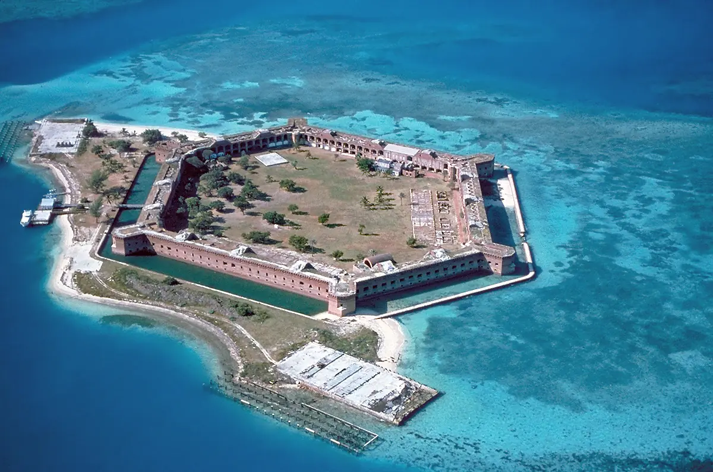

Fort Jefferson — Dry Tortugas
Floride, États-Unis · snorkeling, baignade

Îlot isolé à une centaine de kilomètres à l’ouest de Key West, occupé par un immense fort en briques du XIXᵉ siècle. On nage depuis la plage le long du mur des douves, colonisé par les coraux et les poissons.
- Lieu
- Floride, États-Unis
- Niveau
- Débutant
- Activités
- snorkeling, baignade
- Type d'eau
- Mer / océan
- Coordonnées
- 24.63, -82.87 (position approximative du secteur)
Dangers à connaître
- Courant autour des anciens pontons à charbon : reste près du mur des douves.
- Site très isolé, sans structure médicale.
- Très peu d’ombre : coups de soleil et déshydratation.
Le conseil d'Ocean Buddy
Réserve le ferry ou l’hydravion longtemps à l’avance et emporte eau, ombre et crème solaire : il n’y a presque aucun service sur place.
Ouvrir dans Ocean Buddy Télécharger sur l'App Store
Source : Fiche Ocean Buddy · septembre 2026 · à vérifier localement.